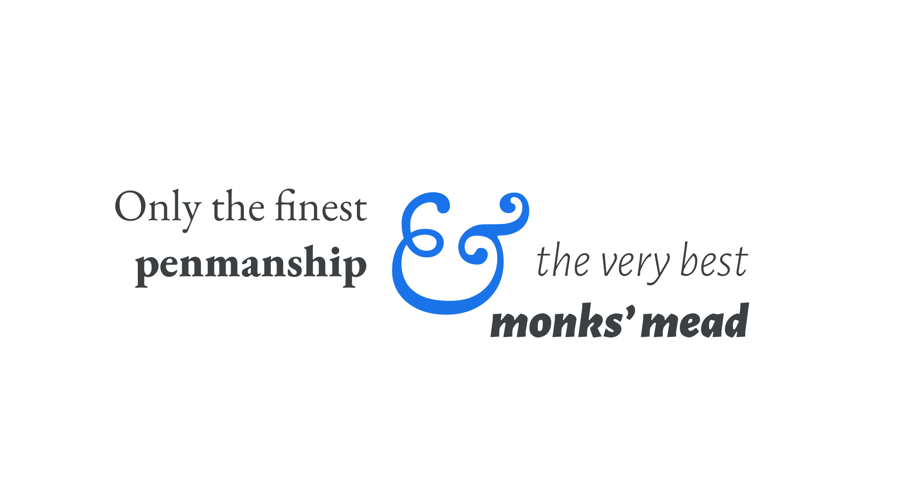

Humanist, or Old Style
By Google Fonts Knowledge contributors · Google Fonts Knowledge.
Original article · Source on GitHub · CC BY-SA 4.0. Text, illustrations and existing credits reproduced from the licensed Knowledge repository. Open Shelf adapted the layout and links; these adaptations are also CC BY-SA 4.0. No endorsement implied.
“Humanist” or “Old Style” is a historical classification for typefaces that draw inspiration from Roman lettering and the Carolingian minuscule (a standardized form of calligraphy) to include forms that reference the stroke of a pen.
Nicolas Jenson printed the first books using a Humanist serif typeface. He was inspired by the simple handwriting of the Italian Humanists, who—challenged by the ornamentation of Gutenberg's Textura Blackletter—developed a style that enabled them to copy manuscripts more quickly.
Although initially a grouping for serif types, it’s also possible to have sans serifs that exhibit a humanist style.

Humanist typefaces declined in use in the 18th and 19th centuries, but enjoyed a major revival in the 20th century and remain popular type choices today.
Examples of serif Humanist typefaces include Spectral, EB Garamond, and Sorts Mill Goudy; examples of sans serif Humanist typefaces include Merriweather Sans and Cabin.